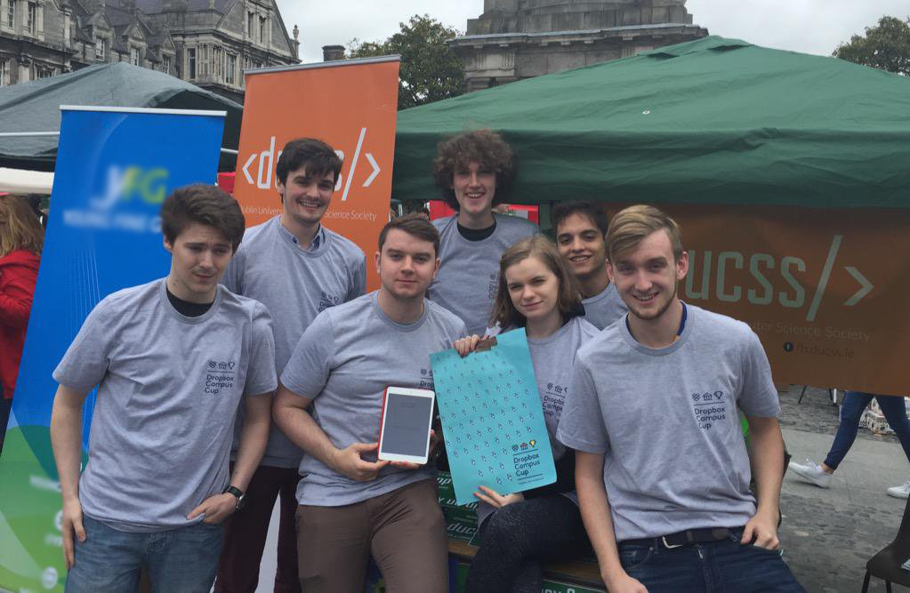

Who am I?
I'm Peter Meehan, a 20 year old software developer with a penchant for mobile oriented design, cool scalable web apps, and vim. I'm halfway through my third year studying Computer Science at Trinity College Dublin. I'm also Dublin University Computer Science Society's Public Relations Officer.
I just so happen to be on the lookout for a summer internship this year on an exciting software development team like yours!
What do I know?
Par for the course, I've been exposed to most of the regular stuff that you may have come to expect from a CS undergrad: algorithms, data structures, information modeling and management, computer architecture (transistor logic, HDL's, a smattering of assembly languages), compiler design, and of course a handful of languages and the accompanying computational mindset.
What may be more of interest is what I've picked up on my own time:
- A strong understanding of the git workflow; having worked on many projects, in both professional and casual capacities, implementing these techniques to keep parallel feature development within the realms of sanity.
- A couple years of experience working on unix based systems, as a result I'm quite comfortable with the unix toolbelt.
- Thanks to Github's student developer pack, I have extensive experience spinning up digital ocean droplets to experiment with whatever project I'm messing about with today.
- All too real experience developing software in a heavily bureaucratic environment.
- Agile.
Linguarum?
Unfortunately, in every sense bar technological, I am monolingual.
Fortunately, that's probably not what you're here for.
Proficient with: C, Java, Python, Javascript (ES5), Jasmine, Angular 1, HTML, CSS, CSS Precompilers(SASS, LESS, STYLUS)
Experience with / Learning: ES6, Typescript, Angular 2, Ruby, Rails, Haskell, Node
What have I done?
Last summer, a friend of mine and I were chosen by the school and hired to design and build the University's new student ID mobile app. This involved conceptualising, building, testing, and publishing the iOS and Android applications, creating a Rails API to talk to the college's student data store and auth servers, and make the site linked below.
At the start of the academic year it became apparent that DUCSS needed a set of new society sign up mobile apps as the old version was built upon a since deprecated Dropbox API. Here I used Ionic to build iOS and Android applications to securely send registration data off to a database behind an API.
As part of my involvement with DUCSS I have deployed and modified a build of Domjudge in order to allow our teams participating in national programming competitions to compete in in-house practice sessions on the same infrastructure that they will encounter at the real competitions. This involved fiddling with some unsightly PHP and cleaning up a few styles. Aside from the link below, more information can be found in the repo.
Many other open source tinkerings can be found over on my github!
What would I like to do for you?
I love learning, so as long as the work is engaging and your stack isn't completely bonkers, colour me interested. If you think your team could put me to good use then by all means give me a shout and I'll send a CV your way!
Contact
© Peter Meehan 2016
Built using a sprinkle of Bootstrap 4.